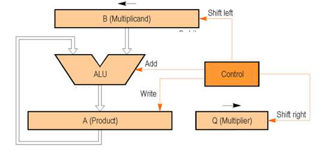
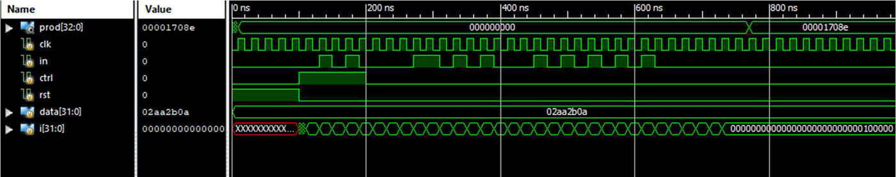
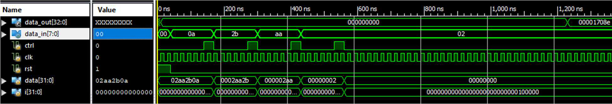
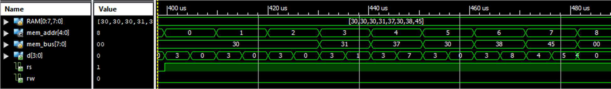

Scalable Serial Hardware Multiplier
Code & ReportFPGA-Based Design · Open-Ended Lab PIEAS · BSEE Spring 2023
A serial multiplier with variable operand length, designed in Verilog using an Algorithmic State Machine. A parallel array multiplier is fixed to one width, but this design receives its operands one bit at a time and reads the multiplier length from the first byte of the input stream. One circuit can therefore multiply operands of different sizes. Around it are an input/output handler that takes bytes from switches or UART, and an LCD driver that shows the 33-bit product in hexadecimal on the FPGA board's character LCD.

Serial input frame
The product accumulates as prod += bit · multiplier, while the multiplier register shifts left by one
each clock cycle until the whole 32-bit frame has been read.
1) Design & Modules
| Module | Role |
|---|---|
mult_sm | Multiplier ASM with one-hot states IDLE → LENGTH → MULT1 → MULT2. A shift counter drives three control lines that say whether the incoming bit belongs to the length, the multiplier or the multiplicand. |
mult | Serial datapath. It builds the 8-bit length and the multiplier, using a variable right-shift to align the multiplier to its actual width, then accumulates shifted partial products into a 33-bit product register. |
io_module | Parallel-to-serial converter. Each press of the control signal latches a byte into a 32-bit shift register. After 4 bytes, a small state machine (IDLE → READY → SHIFT) streams the frame bit by bit into the multiplier. |
IO_w_LCD | Top-level I/O handler (IDLE → STORE → LCD). It shows the low byte of the result on the board's LEDs, converts each 4-bit nibble to an ASCII hex character in a small distributed RAM, and passes it to the LCD. |
lcd_driver | HD44780-style 4-bit LCD controller. It runs a slow initialisation sequence (function set, display on, clear, entry mode), then keeps refreshing both 16-character rows from memory. |
| Testbenches | Separate benches for the multiplier, the I/O handler and the full design with the LCD. |
2) Simulation Results
The multiplier was first tested on its own with the serial input
10101010_1000101011_00001010. The low byte (00001010 = 10) sets a 10-bit multiplier, and
10101010 × 1000101011 correctly gives 0x1708E on the product output.

in, with the product settling to 0001708e.
ctrl pulse, streamed into the multiplier, and the result appears on data_out.
30 30 30 31 37 30 38 45 = "0001708E"), which are sent to the display as 4-bit nibbles.What I Learned
- Splitting a sequential algorithm into an ASM controller plus a datapath, with a shift counter as the single source of timing.
- Handling widths that vary at run time with variable shifts in hardware.
- Moving data between different clock rates: fast serial streaming versus a slow LCD timing chain.
- Driving real peripherals (LEDs and a character LCD) and checking each block separately with its own testbench before connecting them.